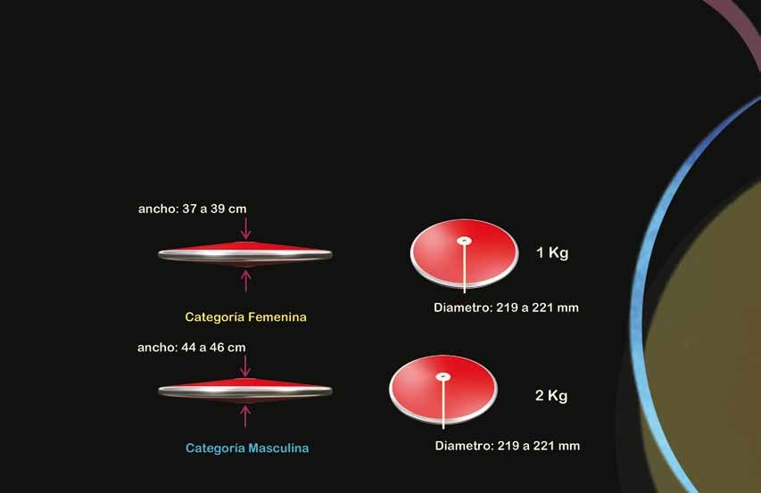

Príprava
Stabilný postoj a uvoľnené držanie disku vytvoria základ plynulého pohybu.
02 / O ŠPORTE
Od prvého pohybu po dopad. Spoznaj podstatu hodu diskom.
Hod diskom patrí medzi atletické hody. Cieľom je poslať disk čo najďalej do vymedzeného sektora. Pretekár vykonáva pokus z kruhu s priemerom 2,5 metra, ktorý obklopuje ochranná klietka. Hmotnosť náčinia sa líši podľa veku a kategórie.
Technika spája otáčku, rovnováhu a odhod. Pohyb začína v nohách, pokračuje cez boky a trup až do ruky. Dôležitá je kontrola: pretekár čaká v kruhu na dopad disku a potom ho opúšťa zadnou polovicou. Vyhráva najdlhší platný pokus.
Zdroj: World Athletics ↗
POHYB V TROCH KROKOCH
Stabilný postoj a uvoľnené držanie disku vytvoria základ plynulého pohybu.
Otáčka pomáha postupne zrýchliť náčinie. Rozhoduje koordinácia celého tela.
Energia sa prenesie do disku. Po vypustení treba udržať rovnováhu v kruhu.
Výukové video odporúčané portálom ActiveSG. Video je v angličtine. Otvoriť priamo na YouTube ↗